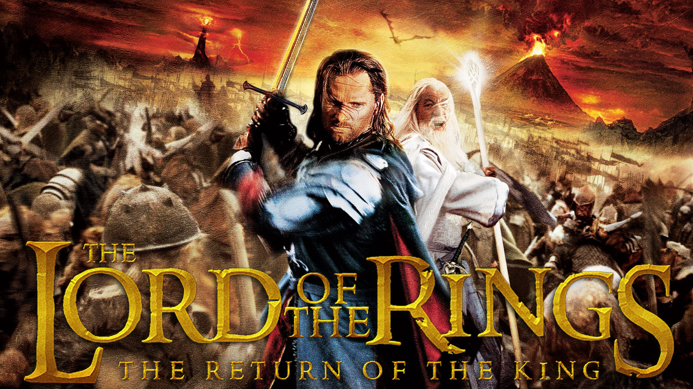

Kingdom Hearts III Review
When it comes to playing Kingdom Hearts III, my initial reaction was both of nostalgia and excitement for the long awaited video game. Most of the fans of this action role-playing game series, can relate to this reaction. Whereas others will initially feel overwhelmed and confused. The Kingdom Hearts series is not for the faint of heart but if you stick with it then there may be a reward for you around the corner.
To discover this reward, you and I will have to recap the story, explore the combat system, and find out where the video game succeeded and where it failed...(click here for more)

Lord of the Rings: Return of the King Review
For a disclamer, this review is not about the movie of The Lord of the Rings: Return of the King. Rather, it is about the video game based off this particular movie. If you are searching for a movie review then I would suggesting searching else where. However, if you are looking for the video game of the same title then you have come to the right place.
When it comes to playing The Lord of the Rings: Return of the King, my initial reaction was both of bewilderment and excitement for a video game that was transformed into one of my favorite Christian movies of all time...(click here for more)

Naruto Ultimate Ninja Storm Review
Naruto Ultimate Ninja Storm is a video game based upon a Shonen Jump manga and anime series of Naruto. When playing Naruto Ultimate Ninja Storm, my initial reaction was satisfactory but not of any excitement due to the lack of faithfulness to the source material. However, the video game is fun for video gamers that are not Naruto fans because it combines the two genres of action-role playing and fighting together.
To explore what this video game has to offer, you and I will recap the story that the video game was based on, review the video's game mechanisms such as the combat system, and find out the video game's flaws and successes...(click here for more)

Final Fantasy X Review
Final Fantasy X is a video game based upon the Final Fantasy series. The Final Fantasy series is a Japanese action role playing game series that contains fifteen different stories as of 2019. Throughout the stories, the main themes that stay consists is the usage of science fiction elements while also using fantasy elements to make the stories come to live with multiple character creating a group of main characters.
When playing Final Fantasy X, my initial reaction was of bewilderment and wonder of how good this game could really be. After playing through it entirely, I consider this video game to be a diamond in the rough...(click here for more)